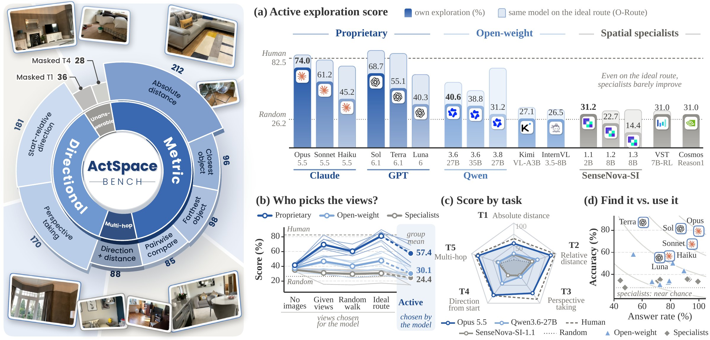
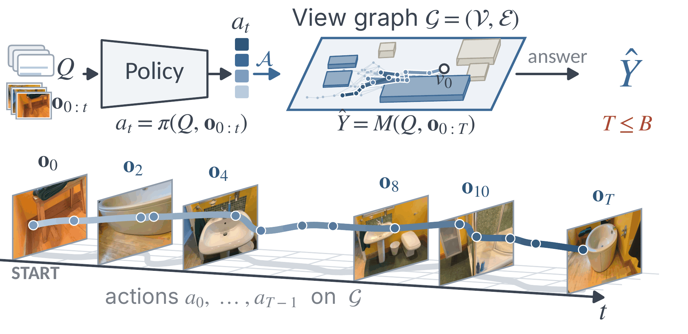
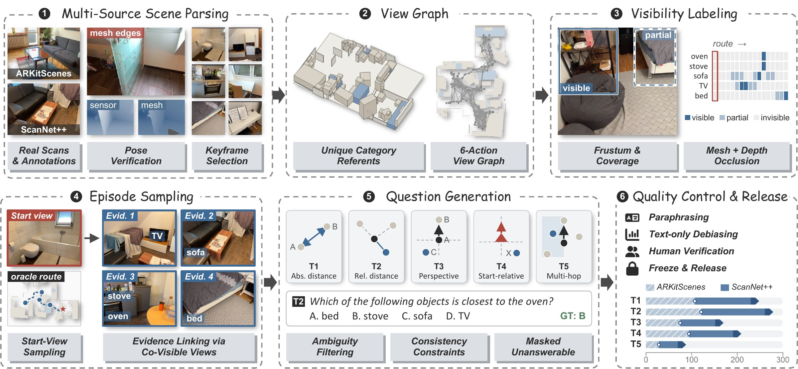
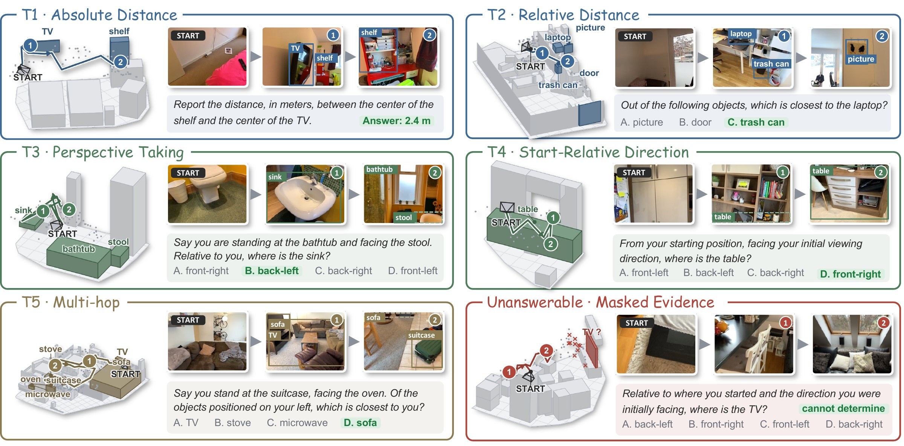

Do vision-language models explore with purpose, or do they just wander?
Most spatial benchmarks hand the model a curated set of views that already contains the answer. In ActSpace-Bench the agent starts from a single photo in which none of the asked-about objects are visible. It has to decide where to go, gather the evidence itself and then answer. A random walk with the same budget runs in the same environment, so the benchmark can tell a model that failed to find the evidence apart from one that found it and failed to reason.


One photo, objects out of sight
A group of 3 to 5 questions about one scene and the START view. Every evidence object is invisible from START and visible somewhere in the scene.
Move through real captured frames
Views form a graph of original capture frames. Each action costs one step, failed moves included, with odometry relative to START.
Answer, or say it cannot be determined
All questions are answered at once. Every question allows cannot_determine; 6.4% are unanswerable by masking every view of the target.
What the model sees, keeps and believes
A live replay of a real episode. Claude Opus 5.5 moves through the room, keeps only the START photo and its 8 most recent frames in context, writes notes as it goes and estimates where each object is. The 3D view places its route and its estimates in the real scan; at the end the true object boxes appear.
00 / 40
left +0.00 m
heading 0°
Distances, comparisons, perspectives and directions
Every answer is computed from the 3D annotations with safety margins, so a question is never decided by a few centimetres or a few degrees. Below, the six construction stages play in order, followed by one real episode per question type.


Five abilities, three distances to the evidence
Each stack holds episodes of one question type, grouped by how many actions the shortest route needs to cover the evidence. Hover a stack to open it; every card replays its evidence route frame by frame.
Watch a model explore, step by step
Left: the real frame the model sees at each step. Right: the floor plan with the route so far, the camera's heading and the objects the questions ask about. Switch between the model, a random walk with the same 40-step budget, and the shortest route that covers all the evidence.
23 models, one environment, the same budget
Scores in percent on the main table: 227 episodes and 962 questions. ΔRW is Active minus a 40-step random walk; a negative value means the model's own exploration gathered less useful evidence than moving at random. Click a column to sort.
Numbers follow Table 2 of the paper. P-40: START plus 40 shuffled frames without poses. RW-40: a random walk with the same 40-step budget and odometry. O-Route: views along the shortest evidence route. AR: answer rate. Sel.: score on answered questions. Rej.: correct refusal on unanswerable questions. ΔRW = Active − RW-40; ΔO = O-Route − Active. By-source views show Active, RW-40 and O-Route from Table 10, with gaps computed from them. Best per column in blue.
Finding the evidence is the bottleneck
Models reason well once the right views are in hand, but most of them do not go and get those views.
Own exploration against a random walk
Headroom to the oracle route
BibTeX
If you use ActSpace-Bench, please cite our paper (arXiv:2611.31215).
@misc{liu2026seekingspacebenchmarkingpurposeful,
title={Seeking in Space: Benchmarking Purposeful Active Exploration of Vision-Language Models for Spatial Reasoning},
author={Xiwei Liu and Yulong Li and Xuhui Li and Xinlin Zhuang and Zhixiang Lu and Haolin Yang and Jianxu Chen and Yifan Lu and Zhiran Zhang and Yutong Xie},
year={2026},
eprint={2611.31215},
archivePrefix={arXiv},
primaryClass={cs.AI},
url={https://arxiv.org/abs/2611.31215},
}